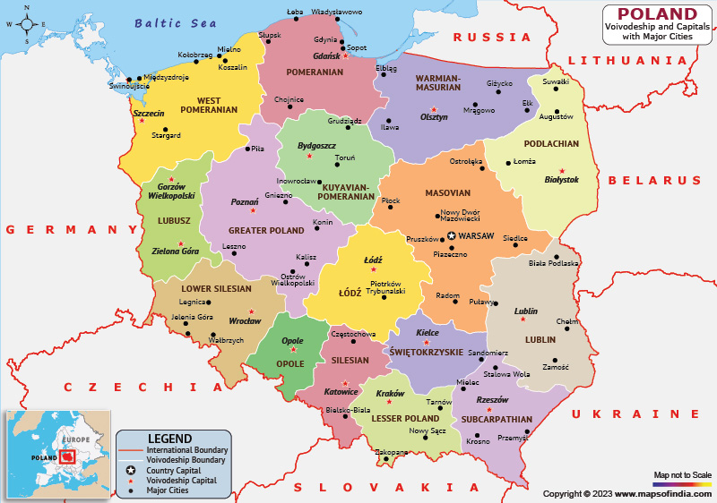

Tagasi

Poola, ametlikult Poola Vabariik (poola keeles Rzeczpospolita Polska) on riik Kesk-Euroopas (teise liigituse järgi Ida-Euroopas). .
11. november 1918
Pealinn-Warsaw
Keel -- poola keel
Rahva arv -- 37 563 071
Linnad mida olen külastanud: Krakow(Varsti 31.10-5.11)
Mida olen saavutanud selle reismisega:
Ajalugu õppinud:❌
Kohaliku toitu proovinud:❌
Kohaliku elamust proovinud:❌